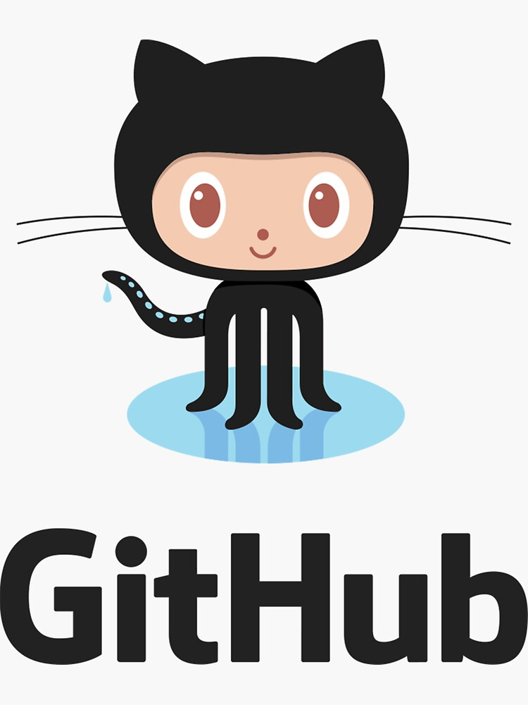

All About Github
- Q. What is a version control system?
- A. manages changes to computer programs
- Q. What is Git?
- A. software for tracking changes in any set of files
- Q. What is Github?
- A. A repository holsting service
- Q. What is the difference between Git and Github?
- A. Github is a service listed on the web where Git is a software used locally
- Q. What company owns it now?
- A. Microsoft
- Q. How much does a Github account cost?
- A. Free
- Q. What is the octocat?
- A. Mascot for the website Github
Git/Github terms:
- repository- a location where data is stored and managed
- commit- similar to save button
- fork- a copy of a repository
- push- updates Github with local commits
- pull requests- used for merging code
- workflows- automated process to run multiple jobs
- issues- used to track your work
- raw button- blank html file
- blame button- determines who made changes to a file